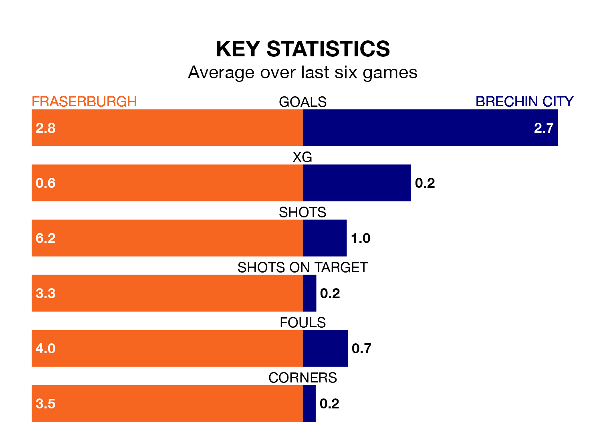

The Highland Football League's top two sides face each other at Bellslea Park in Saturday's kick-off, when second-placed Fraserburgh host Brechin City.
Fraserburgh have picked up 21 wins and three draws from 30 games so far this season, and sit six points below the visitors going into the 3pm match.
Brechin, meanwhile, have won 23 and drawn three, picking up 72 points.
Fraserburgh are in exceptional form in the Highland Football League, with six wins and no losses from their last six games.
With four wins and a draw over that period, Brechin's form is worse – they have taken 13 points from 18, compared to the Broch's 18.
With 80 goals in 30 games so far this season, the hosts are the league's joint-second-highest scorers with 2.7 goals per game. And they are conceding fewer than average, letting in 34 goals at a rate of 1.1 per game.
City are also above average scorers, with 2.6 goals per game, compared to a league average of 1.8. They have conceded 0.7 goals per game.
In the last three years, Fraserburgh and Brechin have played each other on three occasions. They won one each, and they drew once.
Their last meeting was on November 25, when Fraserburgh won 1-0 away.
Fraserburgh's last match was on March 23, a 5-0 win against Rothes.
Brechin beat Wick Academy 2-1 last time out, on March 30.
Updated: 16:41 (UTC), 04/04/24